be loved again.VIVA TOY · repair & reuse service for electronic toys

✳VIVA TOY: fix it when it breaks, pass it on when it’s outgrown
Electronic toys keep getting pricier and harder to fix, and brands won’t touch damage from use. I designed a repair-and-reuse platform: a membership plus VIVA TOY CARE, an AppleCare-style protection plan for toys.
One old toy, three kinds of attachment.
I talked to three kinds of people in China about their old electronic toys. Hover a card to hear it in their words.
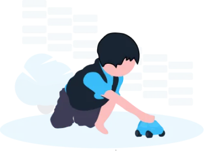
Young kids: want more toys
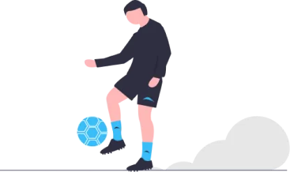
Grown-ups: toys are memories
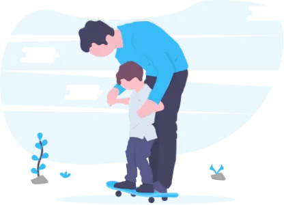
Parents: decluttering as kids grow
Kids from low-income families have few toy options and some adults collect out-of-print toys, while plenty of usable toys sit idle or get sold to recyclers for almost nothing.
Three questions, one gap.
Tap each question.
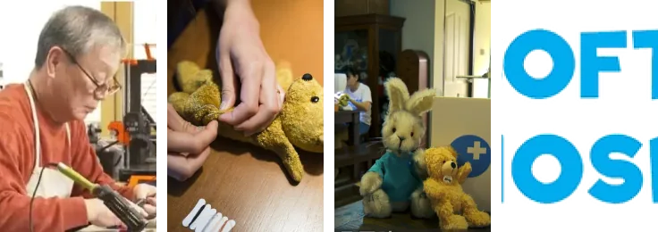
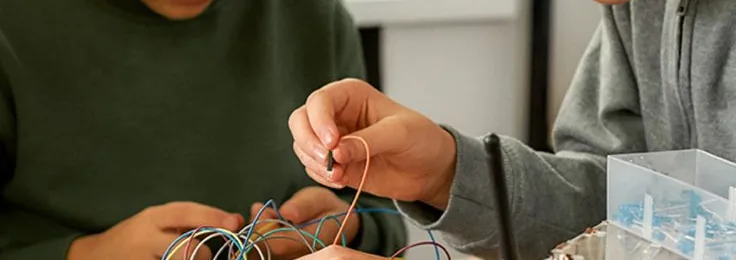
So I asked the brands.
If unofficial repairs cost so much, why not ask the makers? I emailed several well-known brands and checked their websites.
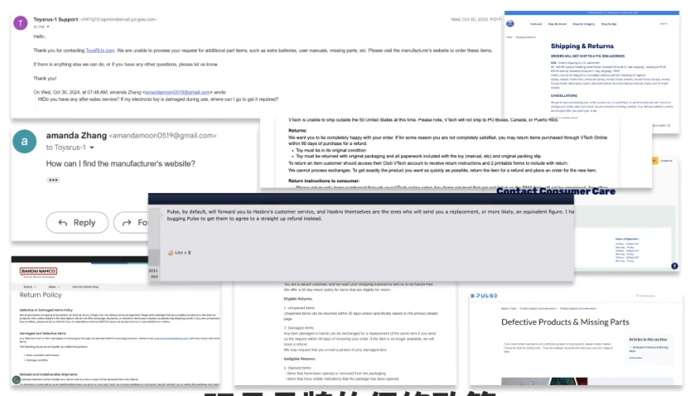
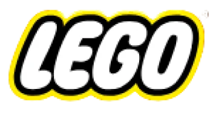
$0–850✕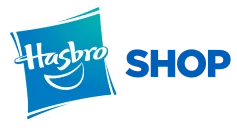
$0–100✕Price range · ✕ = won’t repair damage from use. None of the 7 do.
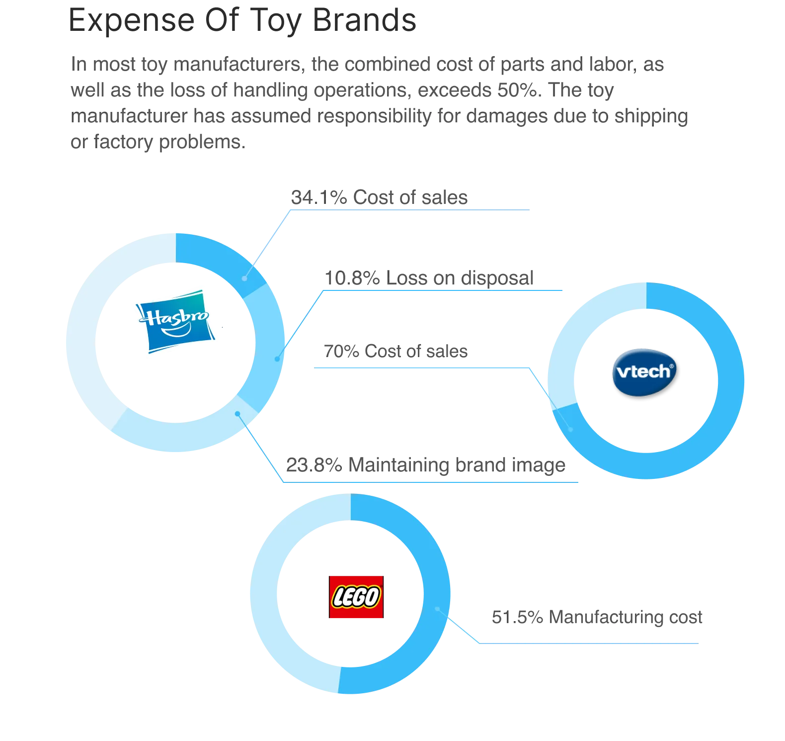
Why brands don’t repair
Parts, labor and handling losses already make up 50%+ of costs, and makers already absorb shipping and factory damage.
The market grows. Toys get harder to fix.
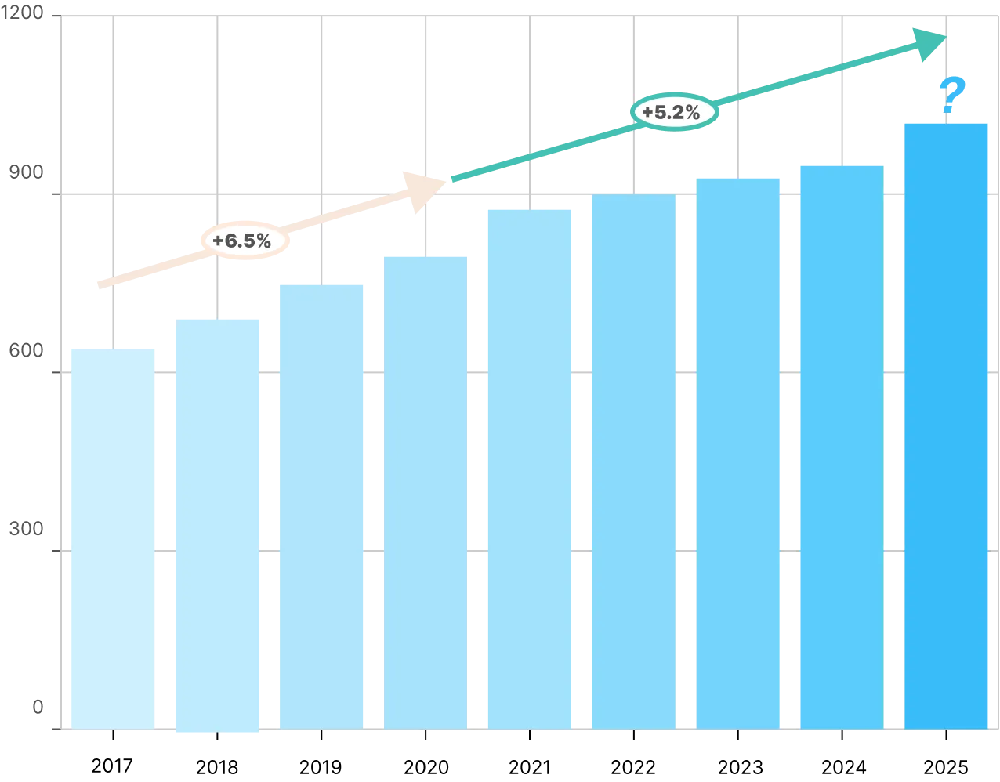
China’s toy market grew from RMB 64.6B in 2017 to RMB 90.7B in 2023, faster than other baby and kids categories. Smart, robot and VR toys take heavy R&D, so they launch at high prices.
Sources: 2023 Toy Industry Report; Kids Corp, 2023
Raw materials cost more too
Plastic and metal prices push toy prices up. Parents are getting more careful and prefer physical stores, where they can try a toy and watch what their kid likes.
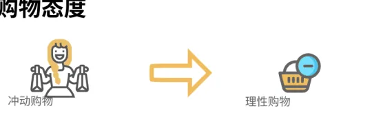
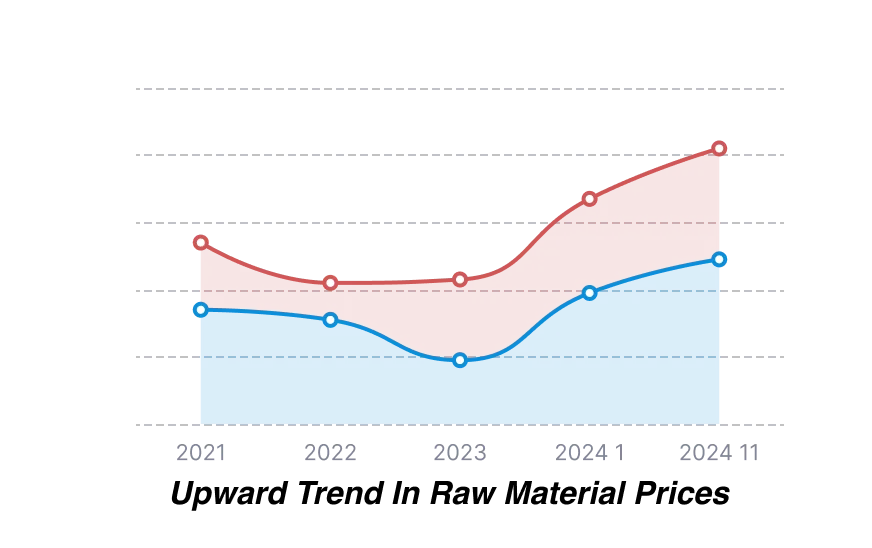
More chips, more sensors, pricier materials. A lot of fixable toys are headed for the bin.
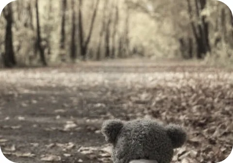
How might we make broken electronic toys affordable to fix, send outgrown ones to the next kid, and keep the business paying for itself?
Borrow AppleCare’s model, for toys.
Different industry, same idea: an insurance-like plan protects users and gives the brand steady funding, even profit.
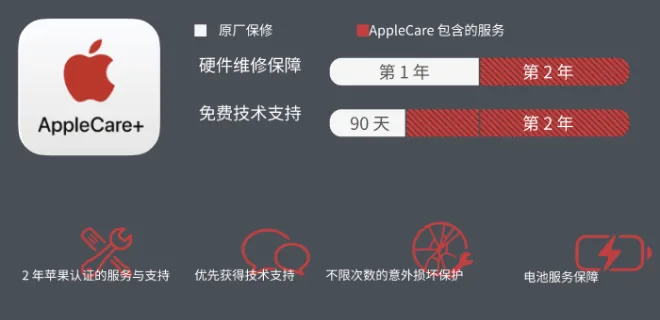
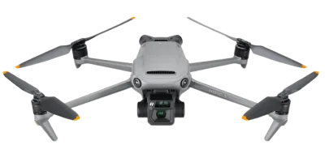
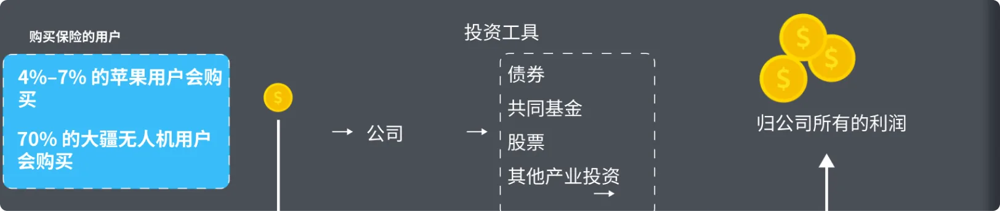
Nine boxes, the whole business on one page.
Recycle used toys to cut waste and save resources for the next generation.
Parents 30–50, urban, budget-conscious
Children 10–18, urban, budget-conscious
Offline: partner stores such as Toys“R”Us
Fixed: labor · website · marketing · retail partners
A loop that keeps itself running.
Circular economy + an AppleCare-like insurance plan + a network of independent repair workers. Click to zoom.
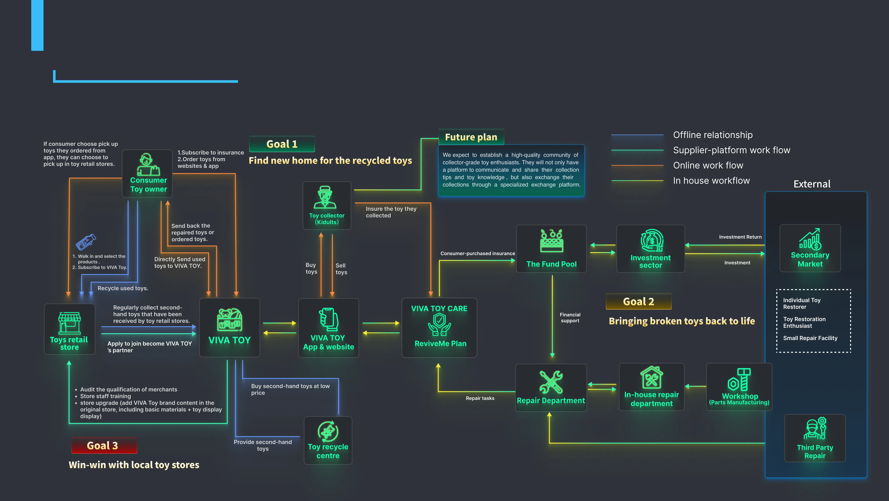
Next: a community where collectors share tips and trade on a dedicated exchange.
From first tap to a fixed toy back home.
Two journeys for the core user, someone who owns toys, from front-stage touchpoints to back-stage support. Scroll sideways, click to zoom.
1 · VIVA TOY membership
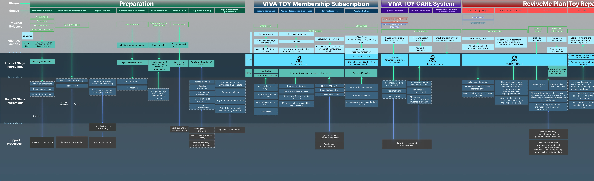
2 · VIVA TOY CARE + repair
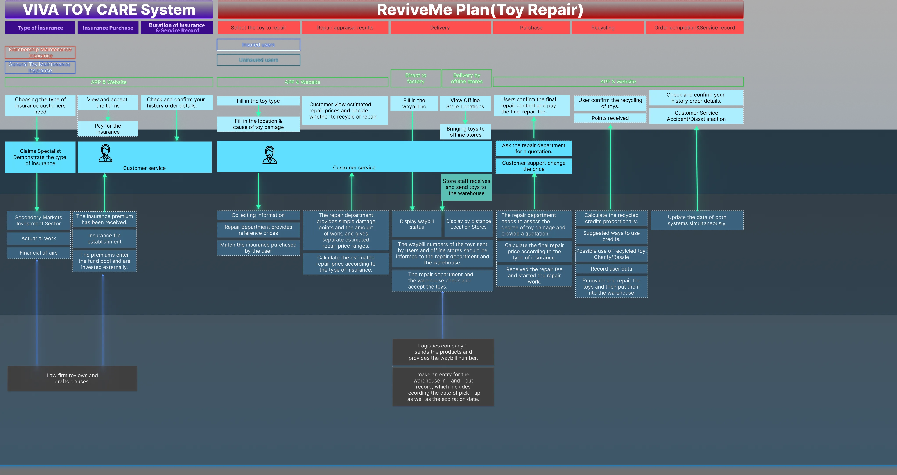
Sky blue, a pop of red, like a new toy box.
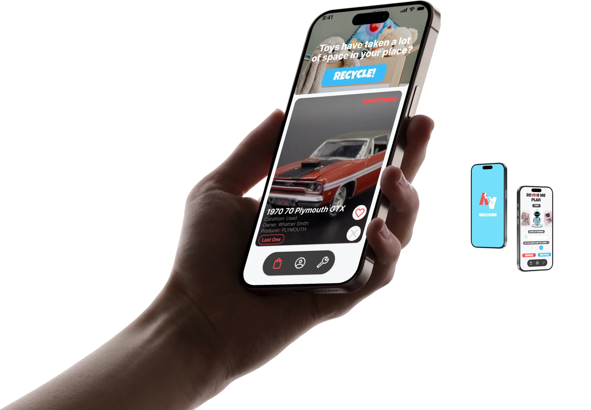
Primary · sky blue
Accent · vivid red
Background · white
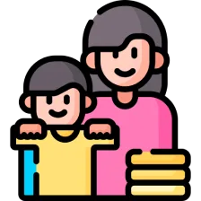
Anyone with toys and nowhere to put them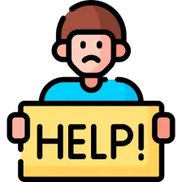
People who need a toy repaired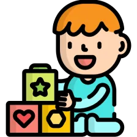
Kids who always want new toysInsurance pays for the service, once enough people join.
- Repair costs you can plan for
- A next owner for outgrown toys
- Foot traffic for local stores
- Too few members and the risk pool fails
- Repair quality depends on scattered workers
- “No take-backs” can disappoint a kid
Make the numbers work before the screens.
Ask parents and collectors how much they’d pay for toy protection.
Pilot with one local toy store: collect old toys and run repairs for a month.Temu→